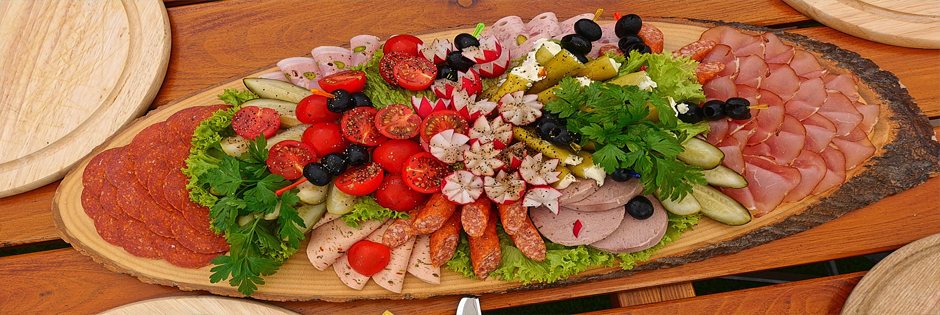

饮食文化
民以食为天，世界上任何一个国家都有一个传统的饮食文明与其它文明共同在历史中轮回。每个地区都有与众不同的饮食习惯和味觉倾向，而各自将这些精妙的技艺发展成了一种习俗，一种文化，这使得无数食客流连在世界的每一个角落。在亚洲的东方有一个拥有悠久文明历史的国度，那里有令人垂涎的山珍，也有令人回肠的美味。来自五湖四海的食材和调味品正在无时无刻的触动着亿万人的神经和味蕾。
中国人的传统饮食习俗是以植物性食料为主。主食是五谷，辅食是蔬菜，外加少量肉食。形成这一习俗的主要原因是中原地区以农业生产为主要的经济生产方式。但在不同阶层中，食物的配置比例不尽相同。因此古代有称在位的皇帝为"肉食者"。
以热食、熟食为主，也是中国人饮食习俗的一大特点。这和中国文明开化较早和烹调技术的发达有关。中国古人认为:"水居者腥，肉臊，草食即膻。"热食、熟食可以"灭腥去臊除膻"(《吕氏春秋·本味》)。中国人的饮食历来以食谱广泛、烹调技术的精致而闻名于世。史书载，南北朝时，梁武帝萧衍的厨师，一个瓜能变出十种式样，一个菜能做出几十种味道，烹调技术的高超，令人惊叹。
在食具方面，中国人的饮食习俗的一大特点是使用筷子。筷子，古代叫箸，在中国有悠久的历史。《礼记》中曾说:"饭黍无以箸。"可见至少在殷商时代，已经使用筷子进食。筷子一般以竹制成，一双在手，运用自如，即简单经济，又很方便。许多欧美人看到东方人使用筷子，叹为观止，赞为一种艺术创造。实际上，东方各国使用筷子其源多出自中国。中国人的祖先发明筷子，确实是对人类文明的一大贡献。
中国饮食文化源远流长，普遍承认的有八大菜系鲁菜、川菜、粤菜和苏菜，闽菜、浙菜、湘菜、徽菜。
我国的菜系，是指在一定区域内，由于气候、地理、历史、物产及饮食风俗的不同，经过漫长历史演变而形成的一整套自成体系的烹饪技艺和风味，并被全国各地所承认的地方菜肴。菜肴在烹饪中有许多流派。清代的时候，中国饮食分为京式、苏式和广式。民国开始，中国各地的文化有了相当大的发展，民国时分为华北、江浙、华南和西南四种流派。后来华北流派分出鲁菜，成为八大菜系之首，江浙菜系分为苏菜、浙菜和徽菜，华南流派分为粤菜、闽菜，西南流派分为川菜和湘菜。鲁、川、苏、粤四大菜系形成历史较早，后来，浙、闽、湘、徽等地方菜也逐渐出名，就形成了我国的"八大菜系"。经过竞争，排次发生变化，首先川菜上升到第二，苏菜退居第三。后来形成最有影响和代表性的也为社会所公认的有:鲁、川、苏、粤、闽、浙、湘、徽等菜系，即被人们常说的中国"八大菜系"。
版权所有：舌尖上的美食网